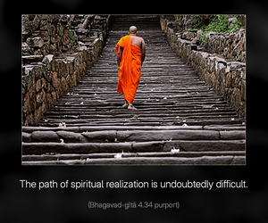

Just try to learn the truth by approaching a spiritual master. Inquire from him submissively and render service unto him. The self-realized souls can impart knowledge unto you because they have seen the truth.

The path of spiritual realization is undoubtedly difficult. The Lord therefore advises us to approach a bona fide spiritual master in the line of disciplic succession from the Lord Himself. No one can be a bona fide spiritual master without following this principle of disciplic succession. The Lord is the original spiritual master, and a person in the disciplic succession can convey the message of the Lord as it is to his disciple. No one can be spiritually realized by manufacturing his own process, as is the fashion of the foolish pretenders. The Bhāgavatam (6.3.19) says, dharmaṁ tu sākṣād bhagavat-praṇītam: the path of religion is directly enunciated by the Lord. Therefore, mental speculation or dry arguments cannot help lead one to the right path. Nor by independent study of books of knowledge can one progress in spiritual life. One has to approach a bona fide spiritual master to receive the knowledge. Such a spiritual master should be accepted in full surrender, and one should serve the spiritual master like a menial servant, without false prestige. Satisfaction of the self-realized spiritual master is the secret of advancement in spiritual life. Inquiries and submission constitute the proper combination for spiritual understanding. Unless there is submission and service, inquiries from the learned spiritual master will not be effective. One must be able to pass the test of the spiritual master, and when he sees the genuine desire of the disciple, he automatically blesses the disciple with genuine spiritual understanding. In this verse, both blind following and absurd inquiries are condemned. Not only should one hear submissively from the spiritual master, but one must also get a clear understanding from him, in submission and service and inquiries. A bona fide spiritual master is by nature very kind toward the disciple. Therefore when the student is submissive and is always ready to render service, the reciprocation of knowledge and inquiries becomes perfect.